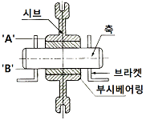
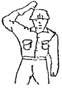

천장크레인운전기능사 (2008-02-03 기출문제)
1과목: 임의 구분
1. 천장크레인의 표시 중 40/20ton×26m 용어의 해석이 맞는 것은?
- 주권 40톤, 보권 20톤, 스팬 26m
- 보권 40톤, 주권 20톤, 스팬 26m
- 주권 20톤~40톤, 스팬 26m
- 주권 0.5톤, 스팬 26m
(정답률: 89%)

2. 훅(hook)이 지상에 도달했을 경우 드럼(drum)에는 최소 몇 회의 감김 여유가 있어야 하는가?
- 감겨있지 않아도 된다.
- 최소 1회 이상
- 최소 2회 이상
- 최소 4회 이상
(정답률: 90%)
3. 주행 차륜의 직경이 400㎜이고, 주행 모터의 회전수가 3000rpm이며, 감속비가 1/100일 때, 주행속도는?
- 약 38m/min
- 약 68m/min
- 약 120m/min
- 약 80m/min
(정답률: 39%)
4. 천장크레인의 용량은 정격하중과 스팬으로 표기하는 것이 보통이지만 한 가지를 더 추가한다면?
- 양정
- 권상속도
- 횡행속도
- 주행속도
(정답률: 78%)
5. 속도제어 제동기는 어떤 때 속도제어를 하는가?
- 권상시
- 권하시
- 권상과 권하시
- 횡행과 권상시
(정답률: 53%)
6. 정격하중이 20000kgf인 천장크레인의 훅(Hook)은 파괴하중이 최소한 몇 kgf 이상인 것을 사용해야 하는가?
- 40000kgf
- 60000kgf
- 80000kgf
- 100000kgf
(정답률: 67%)
7. 주행차륜 직경이 800㎜인 신품 크레인을 설치한 직후 운전 부주의로 구동륜 1개에 깊이 1㎜의 넓은 홈을 생기게 했다. 이때의 조치로 가장 알맞은 것은?
- 차륜의 흠을 제거 후 사상 가공하여 사용한다.
- 어렵더라도 주행차륜 전부를 사상 가공하여 사용한다.
- 구동륜의 직경 차이를 없애기 위해 양쪽 구동륜을 동시 사상 가공하여 사용한다.
- 그대로 사용하여도 무방하다.
(정답률: 36%)
8. 다음 중 권상장치의 동력전달 순서로 맞는 것은?
- 전동기→기어감속기→커플링→드림→와이어로프→훅
- 전동기→커플링→드럼→기어감속기→와이어로프→훅
- 전동기→커플링→기어감속기→드럼→와이어로프→훅
- 전동기→기어감속기→드럼→커플링→와이어로프→훅
(정답률: 63%)
9. 정격하중이 20000kgf인 천장크레인 완성검사 시험하중은 몇 kgf인가?
- 20000kgf
- 22000kgf
- 25000kgf
- 30000kgf
(정답률: 90%)
10. 브레이크 라이닝의 사용 한도는 원 두께의 약 몇 %일 때 새 라이닝으로 교체하여야 하는가?
- 5%
- 15%
- 20%
- 50%
(정답률: 70%)
11. 주행차륜 좌·우 외측 충심간의 수평거리에 해당 되는 것은?
- 차륜하중(wheel load)
- 휠베이스(wheel base)
- 양정(lift)
- 트롤리 스팬(trolley span)
(정답률: 48%)
12. 차륜의 플렌지 두께는 일반적으로 원래 두께의 몇 %가 마모되면 교환하는가?
- 10%
- 20%
- 30%
- 50%
(정답률: 55%)
13. 천장크레인 주행레일 연결부 어긋남의 허용오차는 상·하, 좌·우로 얼마인가?
- 0.1㎜
- 0.5㎜
- 0.5㎝
- 0.1㎝
(정답률: 50%)
14. 시브(활차)의 회전에 대한 그림이다. 옳은 것은?

- 시브와 부시 사이에서 회전한다.
- 부시와 축 사이에서 회전한다.
- 축과 브라켓 사이에서 회전한다.
- 부시와 브라켓 사이에서 회전한다.
(정답률: 53%)
15. 천장크레인용 마그네트 또는 스러스트 브레이크 휠 면의 요철은 몇 ㎜ 이상이 되면 수정 또는 교환하여야 하는가?
- 0.5㎜
- 1㎜
- 2㎜
- 3㎜
(정답률: 32%)
16. 전자 브레이크의 전자석 부분 과열 원인이 아닌 것은?
- 철심 부착 불량
- 전원 전압 강하
- 권선부분 단락
- 브레이크슈의 마모
(정답률: 29%)
17. 천장크레인용 훅(hook)의 입구가 벌어지는 변형량을 시험하는 가장 적합한 것은?
- 훅에 정격하중을 동하중으로 작용시켜 입구의 벌어짐이 0.5% 이하이어야 한다.
- 훅에 정격하중의 2배를 정하중으로 작용시켜 입구의 벌어짐이 0.25% 이하이어야 한다.
- 훅에 최대하중을 동하중으로 작용시켜 입구의 벌어짐이 0.25% 이하이어야 한다.
- 훅에 정격하중을 정하중으로 작용시켜 입구의 벌어짐이 0.5% 이하이어야 한다.
(정답률: 47%)
18. 중추식 리미트 스위치의 주된 역할은?
- 권하시 상용 과권 방지
- 권상시 상용 작동 장치
- 주행 또는 횡행 작동시 양정을 초과하는 작업 방지
- 권상시 비상용 과권 방지
(정답률: 32%)
19. 천장크레인에 대한 용어 설명으로 가장 적합한 것은?
- 주행레일 위에 설치된 교각에 의해 지지되는 거더가 있는 크레인이다.
- 주행레일 위에 설치된 새들에 직접적으로 지지되는 거더가 있는 크레인이다.
- 상당량의 짐을 인력으로 달아 올리기 및 이동시키는데 사용되는 공구의 일종이다.
- 엔진의 힘으로 무거운 짐을 간편하게 옮길 수 있는 크레인이다.
(정답률: 75%)
20. 리미트스위치의 사용처 설명으로 가장 적합한 것은?
- 주권에만 사용
- 보권에만 사용
- 주행, 횡행에만 사용
- 주권과 보권에 주로 사용하나 필요에 따라 주·횡행도 사용
(정답률: 75%)
2과목: 임의 구분
21. 두 축의 회전방향이 같으며, 높은 감속비를 얻기 위해 사용되는 기어는?
- 베벨 기어
- 하이포이드 기어
- 내접 기어
- 스퍼어 기어
(정답률: 30%)
22. 트롤리(Trolley) 도언의 좌·우 고저차는 기준면에서 몇 ㎜ 이하를 유지하여야 하는가?
- ±2㎜
- ±4㎜
- ±6㎜
- ±8㎜
(정답률: 70%)
23. 저항기에 중간속도로 장시간 운전할 경우 일어나는 현상 설명으로 가장 적합한 것은?
- 저항기의 온도가 상승한다.
- 전동기의 온도가 내려간다.
- 다른 속도의 운전과 전동기 온도는 동일하다.
- 정격속도로 운전하는 것보다 유리하다.
(정답률: 56%)
24. 전기 기기의 불꽃 발생을 막기 위한 방법으로 틀린 것은?
- 스위치류의 개폐는 신속히 행한다.
- 스위치의 접촉면에 먼지나 이물질이 없도록 한다.
- 접촉면을 매끄럽게 유지시킨다.
- 가능한 교류보다 직류를 많이 사용한다.
(정답률: 85%)
25. 천장크레인 운전개시 전의 점검사항으로서 수전전압의 상태가 규정전압보다 몇 % 이상 차이가 나면 운전을 금지해야 하는가?
- ±3% 이상
- ±10% 이상
- ±20% 이상
- ±30% 이상
(정답률: 44%)
26. 천장크레인 보수관리에 대해 틀린 것은?
- 예방보전과 사후보전으로 구분할 수 있다.
- 고장이 일어날 것 같은 부분을 계획적으로 교환 수리하는 것을 예방보전이라 한다.
- 권상장치의 수리는 사후보전에 속한다.
- 크레인의 모든 장치를 예방보전하는 것이 가장 좋다.
(정답률: 73%)
27. 키(Key)에 대한 설명 중 틀린 것은?
- 구배(taper key)는 키에 기울기를 준 것이다.
- 키(Key)는 축에 회전체를 고정 시키는데 사용된다.
- 키(Key)는 수시로 급유하여 녹을 방지해야 한다.
- 키(Key)는 회전력을 전달하는데 사용된다.
(정답률: 52%)
28. 사용 중인 천장크레인은 산업안전보건법 관련에 따라 주기적인 점검 및 검사를 실시하여야 한다. 다음 중 관계가 없는 것은?
- 자체검사
- 작업시작 전 점검
- 정기검사
- 완성검사
(정답률: 72%)
29. 메가테스터는 무엇을 측정하는 것인가?
- 전기 전도도
- 전력량
- 전압
- 전기 절연저항
(정답률: 53%)
30. 재료의 응력 중 가장 작은 값을 나타내는 것은?
- 사용 응력
- 허용 응력
- 탄성 한도
- 극한 강도
(정답률: 20%)
31. 천장크레인 감속기의 급유에 관한 설명으로 틀린 것은?
- 사용 오일의 점도는 치(기어이)면 하중이나 운전온도가 높을수록 고점도유를 사용한다.
- 개방기어는 정기적으로 조금씩 급유한다.
- 개방식이 아닌 기어박스 내부에 있는 기어오일은 월 1회 보충하여 사용하는 것이 좋다.
- 기어에 윤활유를 공급하면 기어의 치(기어이)가 서로 맞물릴 때 치면에 유막을 형성한다.
(정답률: 32%)
32. 몇 가지 부품에 대하여 예비품을 두어야 하는 목적은?
- 운전 중 고장이 쉽게 발생되는 부품에 대하여 정비 시간을 단축시키기 위해
- 부품 값이 비싸며 운반할 때 불편하므로
- 형식을 갖추어 둘 필요가 있으므로
- 쉽게 구할 수 있는 부품이며 값이 싸므로
(정답률: 87%)
33. 회전축 베어링 유닛에 진동이 생기는 원인 중 틀린 것은?
- 1축상 2개의 베어링 유닛을 사용하는 경우
- 하우징 취부 볼트가 풀린 경우
- 축이 휜 경우
- 베어링 내부의 마모에 의해 틈이 커진 경우
(정답률: 58%)
34. 천장크레인에 사용하는 전동기 중 2차 저항제어 방식을 사용하여 기동 및 속도제어를 행하는 전동기는?
- 직류 직권 전동기
- 교류 권선형 유도 전동기
- 교류 농형 전동기
- 직류 분권 전동기
(정답률: 77%)
35. 전동기가 입력 20kW로 운전하여 23HP의 동력을 발생하고 있을 때 전동기의 효율은? (단, 1HP는 746W)
- 64.8%
- 85.8%
- 87%
- 96%
(정답률: 54%)
36. 전기 기호 중 맞는 것은?
- 저항 : Ω
- 전력량 : R
- 전류 : V
- 전압 : A
(정답률: 74%)
37. 리모콘 크레인의 취급에 대한 설명 중 틀린 것은?
- 제어기는 다른 크레인용과 혼동되지 않도록 이름판을 부착하고 각 크레인 별로 구분하여 둔다.
- 운전위치와 크레인의 기계 장치가 떨어져 있는 경우는 육안에 의한 점검은 생략할 수 있다.
- 운전 중에 권상 화물이 보이지 않는 위치에 이동한 경우는 일단 정지한 후 권상 화물이 보이는 장소로 이동한 후 운전을 재개한다.
- 작업 개시 전 비상정지 버튼을 눌러 전원이 끊어지는가를 확인한다.
(정답률: 84%)
38. 다음 중 커플링 조립볼트에 고무부시(rubber bush)를 끼워 그 탄성을 이용한 커플링은?
- 체인커플링
- 기어커플링
- 플랜지형 플렉시블 커플링
- 유체커플링
(정답률: 81%)
39. 천장크레인 운전 시작 전 고려하여야 할 사항으로 틀린 것은?
- 작업내용과 작업순서에 대하여 관계자와 충분히 협의한다.
- 크레인 이동하는 영역 내에 장애물이 없는지를 사전에 확인한다.
- 방호장치의 이상 유무를 확인한다.
- 이동할 물품 종류 등에 대해서 고려 할 필요가 없으며, 신속한 작업의 고려가 우선이다.
(정답률: 90%)
40. 천장크레인으로 하중을 운반할 때 주의할 점에 대한 설명 중 가장 옳은 것은?
- 규정된 하중 이상은 매달지 않는 것이 원칙이나 전에 매달아서 사고가 없었던 하중이면 매달아도 무방하다.
- 보조 와이어로프는 와이어 작업자가 선정하는 것이 좋다.
- 와이어로프는 훅의 중심에 걸고 매다는 각도는 안전한 각도를 유지하는 것이 좋다.
- 신호수에게만 의존하여 운전하며, 운반물을 지상에서 높이 달아 운반하는 것이 좋다.
(정답률: 62%)
3과목: 임의 구분
41. 와이어로프에 소선을 꼬아 합친 것은?
- 심강
- 트래드
- 공심
- 스트랜드
(정답률: 69%)
42. 줄걸이용 와이어로프를 엮어 넣기로 고리를 만들려고 한다. 이때 엮어 넣는 적정 길이(Splice)는?
- 와이어로프 지름의 5~10배
- 와이어로프 지름의 10~20배
- 와이어로프 지름의 20~30배
- 와이어로프 지름의 30~40배
(정답률: 16%)
43. 체인에 대한 설명 중 틀린 것은?
- 고온이나 수중 작업 시 와이어로프 대용으로 체인을 사용한다.
- 떨어진 두 축의 전동장치에는 주로 링크 체인을 사용한다.
- 체인에는 크게 링크 체인과 롤러 체인이 있다.
- 롤러 체인의 내구성은 핀과 부시의 마모에 따라 결정된다.
(정답률: 17%)
44. 4,8ton의 부하물을 4줄걸이로 하여 각도 60°로 매달았을 때 한쪽 줄에 걸리는 하중은 약 몇 ton인가?
- 0.69ton
- 1.23ton
- 1.39ton
- 1.46ton
(정답률: 29%)
45. 줄걸이 용구에 해당되지 않는 것은?
- 와이어로프(wire rope)
- 조인트(joint)
- 체인(chain)
- 섀클(shackle)
(정답률: 52%)
46. 체적이 같을 때 무거운 것부터 차례로 나열한 것은?
- 동-납-점토-철
- 점토-납-동-철
- 철-동-납-점토
- 납-동-철-점토
(정답률: 62%)
47. 크레인으로 중량물을 인양하기 위해 줄걸이 작업을 할 때 주의사항으로 틀린 것은?
- 중량물의 중심위치를 고려한다.
- 줄걸이 각도를 최대한 크게 해준다.
- 줄걸이 와이어로프가 미끄러지지 않도록 한다.
- 날카로운 모서리가 있는 중량물은 보호대를 사용한다.
(정답률: 79%)
48. 다음 중 와이어로프의 직경의 허용차 표시로 맞는 것은?
- ＋7% ~ -7%
- ＋7% ~ 0%
- 0% ~ -7%
- 50%
(정답률: 71%)
49. 줄걸이용 와이어로프의 안전율은?
- 2
- 3
- 4
- 5
(정답률: 73%)
50. 그림과 같이 주먹을 머리에 대고 떼었다 붙였다 하며 호각을 짧게, 길게 부는 신호 방법은?

- 보권사용
- 주권사용
- 위로 올리기
- 작업 완료
(정답률: 72%)
51. 토크렌치의 사용방법으로 올바른 것은?
- 핸들을 잡고 밀면서 사용한다.
- 토크증대를 위해 손잡이에 파이프를 끼워서 사용하는 것이 좋다.
- 게이지에 관계없이 볼트 및 너트를 조이면 된다.
- 볼트나 너트 조임력을 규정값에 정확히 맞도록 하기 위해 사용한다.
(정답률: 89%)
52. 전기장치의 퓨즈가 끊어져서 다시 새것으로 교체 하였으나 또 끊어졌다면 어떤 조치가 가장 옳은가?
- 계속 교체한다.
- 용량이 큰 것으로 갈아 끼운다.
- 구리선이나 납선으로 바꾼다.
- 전기 장치의 고장개소를 찾아 수리한다.
(정답률: 81%)
53. 다음 그림과 같은 안전 표지판이 나타내는 것은?
- 비상구
- 출입금지
- 보안경 착용
- 인화성물질 경고
(정답률: 70%)
54. 기중기로 물건을 운반할 때 주의사항으로 틀린 것은?
- 규정무게 보다 초과하여 사용하여야 한다.
- 적재물이 떨어지지 않도록 한다.
- 로프 등의 안전 여부를 항상 점검한다.
- 선회 작업 전에 작업 반경을 확인한다.
(정답률: 91%)
55. 작업장에서 지켜야 할 안전 수칙이 아닌 것은?
- 작업 중 입은 부상은 즉시 응급조치하고 보고 한다.
- 밀폐된 실내에서는 장비의 시동을 걸지 않는다.
- 통로나 마룻바닥에 공구나 부품을 방치하지 않는다.
- 기름걸레나 인화물질은 나무상자에 보관한다.
(정답률: 89%)
56. 다음 중 보호안경을 끼고 작업해야하는 사항과 가장 거리가 먼 것은?
- 산소용접 작업 시
- 그라인더 작업 시
- 건설기계장비 일상점검 작업 시
- 장비의 하부에서 점검, 정비 작업 시
(정답률: 82%)
57. 배터리 전해액처럼 강산알칼리 등의 액체를 취급할 때 가장 적합한 복장은?
- 면장갑착용
- 면직으로 만든 옷
- 나일론으로 만든 옷
- 고무로 만든 옷
(정답률: 72%)
58. 화재 및 폭발의 우려가 있는 가스발생장치 작업장에서 지켜야 할 사항으로 맞지 않는 것은?
- 불연성 재료 사용금지
- 화기 사용금지
- 인화성 물질 사용금지
- 점화원이 될 수 있는 기계 사용금지
(정답률: 76%)
59. 해머(hammer)작업에 대한 내용으로 잘못된 것은?
- 작업자가 서로 마주보고 두드린다.
- 녹슨 재료 사용 시 보안경을 사용한다.
- 타격범위에 장해물을 없도록 한다.
- 작게 시작하여 차차 큰 행정으로 작업하는 것이 좋다.
(정답률: 84%)
60. 목재, 종이, 석탄 등 일반 가연물의 화재 분류는?
- A급 화재
- B급 화재
- C급 화재
- D급 화재
(정답률: 53%)